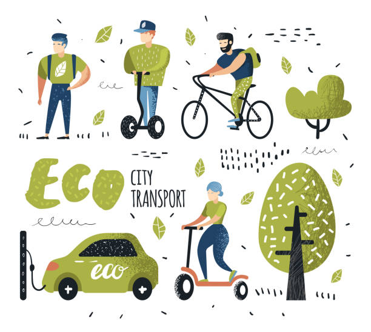
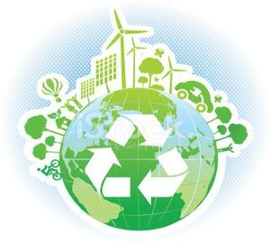
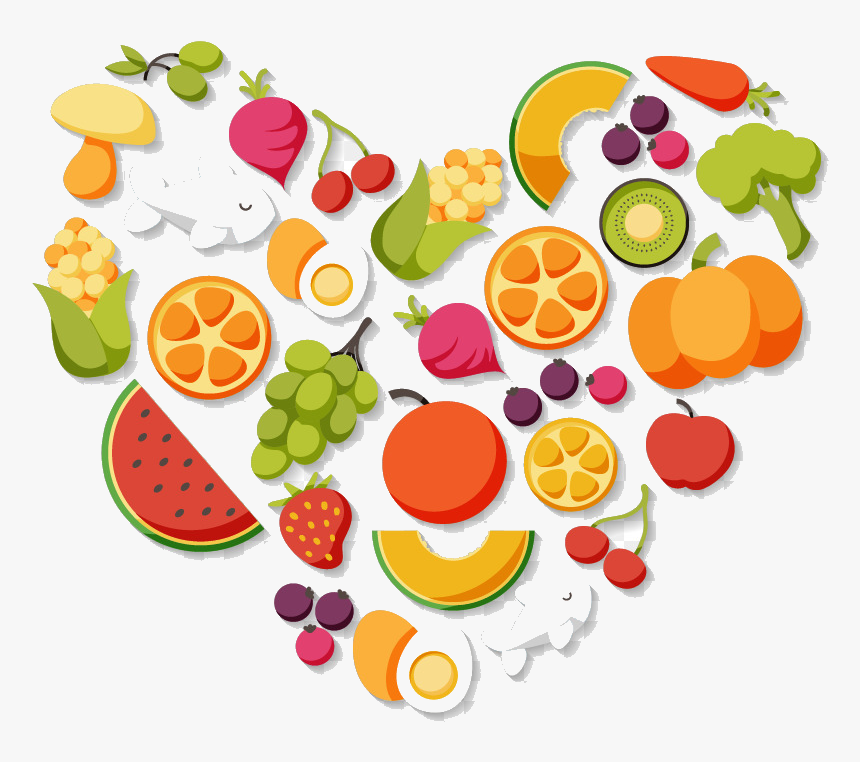
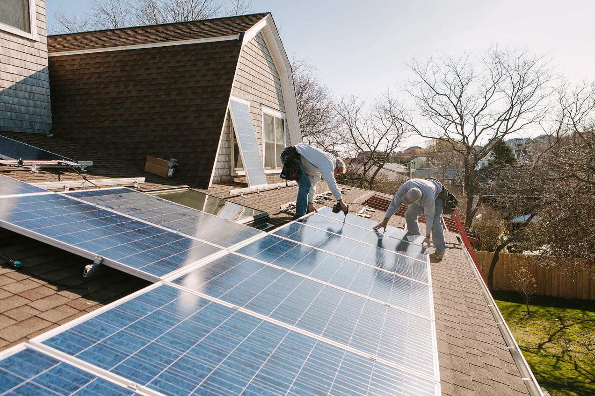

How we can help
Global warming isn't an issue that's just going to solve itself! It's an issue that possesses a solution; a solution that requires cooperation from everyone. If everyone can do their part, the Earth will be all the better for it. There are many ways we can help our planet stray from suffering an accelerated death. A huge difference can be made by just making a few lifestyle alterations. The things we do throughout our daily routine inadvertently affects the environment. From the way we get around our neighborhood, to the things we eat, the changes we can make to our routines can have significant long-term benefits. Here are some ways in which anyone can help the planet.
Transportation
Many Americans often don't realize how severe the damage can be from gas powered vehicles. Instead of driving a personal gas-powered car, try taking public transportation. When it is possible, try walking or biking to your destination. You'll be killing two birds with one stone by exercising and helping the planet simultaneously!
Power
It's no secret that our homes are filled with electronics, most of which are being powered by electricity, which results in a large amount of gas emissions. Make sure to unplug your appliances when they're not in use, and that you're using the least amount of electricity that you can. Even something as small as turning the lights off throughout the day can make a difference. If possible, start investing in renewable energy sources such as solar energy.
Nutrition
Believe it or not, you are making a difference by changing your dietary habits. A good chunk of energy used by the US is devoted towards processing and preparing food. Most of this processed meat ends up polluting our landfills due to being tossed aside. If we can all reduce our intake of meat and stop wasting food, we can all help the planet.
This is an additional motivation to start eating vegetables.

Some other ways you can help include:
- Plant more trees
- Switch your light bulbs to energy-efficient models
- Instead of a dryer, hang up your laundry
- Spread the word! Let your community know what they should do to contribute!
And most importantly...
